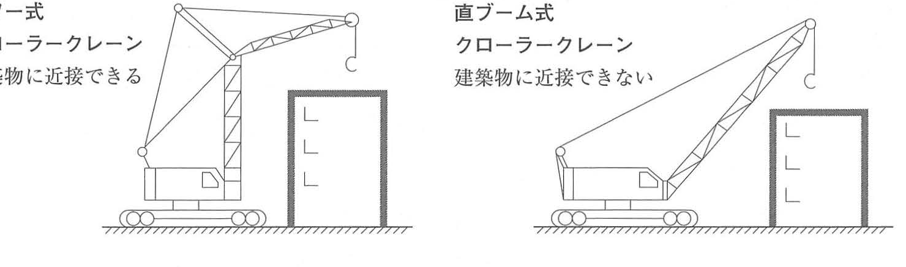
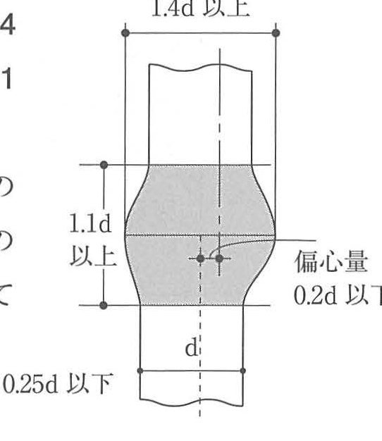
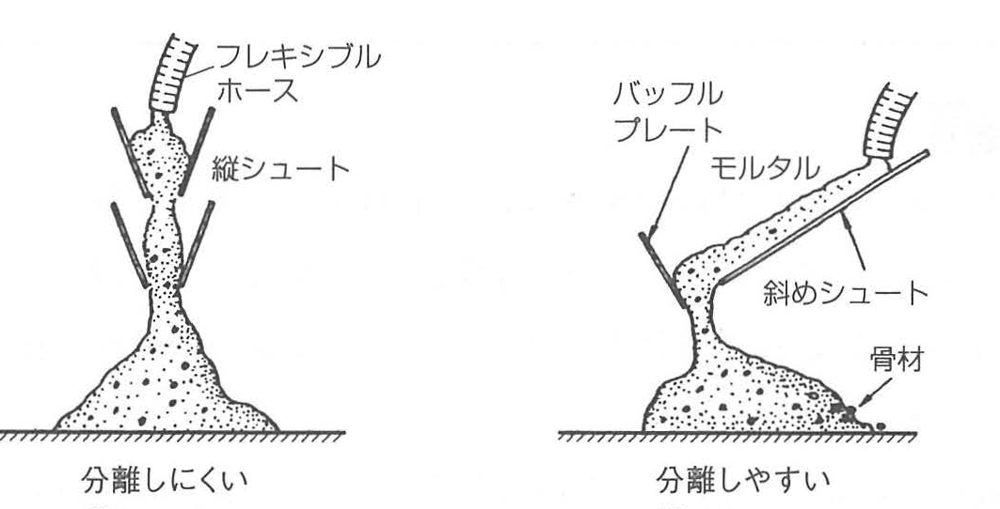

原文
次の設問1から設問8の各記述において、記述ごとの①から③の太字の語句又は数値のうち最も不適当な箇所番号を1つあげ、適当な語句又は数値を記入しなさい。
| 設問 | 最も不適当な箇所番号 | 適当な語句又は数値 |
|---|---|---|
| 設問1 | ② | タワー式 |
| 設問2 | ① | 平状 |
| 設問3 | ① | ケリーバー |
| 設問4 | ① | 1.4 |
| 設問5 | ③ | 小さい |
| 設問6 | ③ | 30 |
| 設問7 | ① | 100 |
| 設問8 | ③ | 30 |
次の設問1から設問8の各記述において、記述ごとの①から③の太字の語句又は数値のうち最も不適当な箇所番号を1つあげ、適当な語句又は数値を記入しなさい。
| 設問 | 最も不適当な箇所番号 | 適当な語句又は数値 |
|---|---|---|
| 設問1 | ② | タワー式 |
| 設問2 | ① | 平状 |
| 設問3 | ① | ケリーバー |
| 設問4 | ① | 1.4 |
| 設問5 | ③ | 小さい |
| 設問6 | ③ | 30 |
| 設問7 | ① | 100 |
| 設問8 | ③ | 30 |
Trong từng nội dung từ Câu hỏi 1 đến Câu hỏi 8, trong số các từ ngữ hoặc trị số in đậm được đánh dấu ① đến ③, hãy chọn một vị trí không thích hợp nhất và ghi từ ngữ hoặc trị số thích hợp.
| Câu | Vị trí sai nhất | Nội dung đúng |
|---|---|---|
| Câu 1 | ② | タワー式: dạng tháp |
| Câu 2 | ① | 平状: dạng phẳng |
| Câu 3 | ① | ケリーバー: Kelly bar |
| Câu 4 | ① | 1,4 |
| Câu 5 | ③ | 小さい: nhỏ |
| Câu 6 | ③ | 30° |
| Câu 7 | ① | 100 stud |
| Câu 8 | ③ | 30° |
Đây là dạng bài tìm nội dung sai. Các trị số hoặc từ ngữ sai trong câu hỏi được giữ nguyên theo đề gốc; phần giải thích sau đó nêu nội dung phải sửa.
ラフテレーンクレーンと油圧トラッククレーンを比較した場合、狭所進入、狭隘地作業性に優れるのは、ラフテレーンクレーンである。①
クローラクレーンのタワー式と直ブーム式を比較した場合、ブーム下のふところが大きく、より建物に接近して作業が可能なのは、直ブーム式である。②
また、定置式のタワークレーンの水平式と起伏式を比較した場合、吊上げ荷重が大きく揚程が高くとれるのは、起伏式である。③
Khi so sánh cần trục rough-terrain với cần trục xe tải thủy lực, loại có ưu thế về khả năng đi vào nơi chật hẹp và làm việc trong khu vực hạn chế là cần trục rough-terrain. ①
Khi so sánh cần trục bánh xích dạng tháp với dạng cần thẳng, đề cho rằng loại có khoảng trống phía dưới cần lớn và có thể làm việc sát công trình hơn là dạng cần thẳng. ②
Khi so sánh cần trục tháp cố định dạng cần ngang và dạng cần nâng hạ góc, loại có tải trọng nâng lớn và đạt chiều cao nâng lớn là dạng cần nâng hạ góc. ③

Dạng tháp dựng phần tower gần thẳng đứng rồi vươn jib phía trên nên thân máy có thể đặt gần công trình hơn. Dạng cần thẳng cần khoảng trống phía trước để nghiêng boom, vì vậy không tiếp cận sát công trình bằng dạng tháp.
根切りにおいて、床付け面を乱さないため、機械式掘削では、通常床付け面上30～50cmの土を残して、残りを手掘りとするか、ショベルの刃を爪状のものに替えて掘削する。①
床付け面を乱してしまった場合は、粘性土であれば礫や砂質土などの良質土に置換するか、セメントや石灰などによる地盤改良を行う。② ③
根切りの床付け面は、基礎に直接的に接し、地震時の水平力を摩擦によって地盤に伝達するもので、過掘したり、掘削して乱してはならない。
このため、通常、床付け面上約30～50cmは、手掘りとすることが原則である。また、比較的安定している地盤では、バックホウのショベルの刃を平状のアタッチメントに替えてゆっくりと切削することもある。
過掘したときは、次の措置をする。
よって、ショベルの刃は平状のものとするので、①は不適当である。
Trong công tác đào đất, để không làm xáo trộn mặt đáy đào hoàn thiện, khi đào bằng máy thông thường phải để lại phần đất phía trên mặt đáy đào dày 30～50 cm, rồi đào phần còn lại bằng thủ công; hoặc thay lưỡi gầu bằng loại dạng răng để đào. ①
Nếu đã làm xáo trộn mặt đáy đào, đối với đất dính có thể thay bằng đất tốt như sỏi hoặc đất cát, hoặc thực hiện cải tạo nền bằng xi măng hoặc vôi. ② ③
Mặt đáy đào hoàn thiện tiếp xúc trực tiếp với móng và truyền lực ngang khi động đất xuống nền đất thông qua ma sát, vì vậy không được đào quá sâu hoặc làm xáo trộn mặt nền.
Do đó, về nguyên tắc, phần đất phía trên mặt đáy khoảng 30～50 cm được để lại để đào thủ công. Với nền đất tương đối ổn định, có thể thay lưỡi gầu backhoe bằng attachment dạng phẳng rồi cắt đất từ từ.
Khi đào quá sâu, thực hiện các biện pháp sau.
Vì lưỡi gầu phải là dạng phẳng, nên ① dùng từ dạng răng là không thích hợp.
アースドリル工法は、アースドリル機のクラウンの中心を杭心に正確に合わせ、機体を水平に据え付け、掘削孔が鉛直になるまでは慎重に掘削を行い、表層ケーシングを鉛直に立て込む。①
一般に掘削孔壁の保護は、地盤表層部はケーシングにより、ケーシング下端以深は、ベントナイトやCMCを主体とする安定液によりできるマッドケーキ（不透水膜）と水頭圧により保護する。② ③
Trong công pháp Earth Drill, đề ghi rằng phải căn chính xác tâm crown của máy trùng với tâm cọc, đặt máy nằm ngang, sau đó đào cẩn thận cho tới khi lỗ khoan đạt phương thẳng đứng và lắp casing bề mặt theo phương thẳng đứng. ①
Thông thường, thành lỗ khoan được bảo vệ như sau: phần gần mặt đất bằng casing; phần sâu hơn đầu dưới casing được bảo vệ bằng mud cake, tức màng không thấm nước hình thành từ dung dịch ổn định chủ yếu gồm bentonite và CMC, kết hợp với áp lực cột dung dịch. ② ③
鉄筋のガス圧接を行う場合、圧接部の膨らみの直径は、主筋等の径の1.2倍以上とし、かつ、その長さを主筋等の径の1.1倍以上とする。① ②
また、圧接部の膨らみにおける圧接面のずれは、主筋等の径の1/4以下とし、かつ、鉄筋中心軸の偏心量は、主筋等の径の1/5以下とする。③
Khi thực hiện hàn ép khí cốt thép, đường kính phần phình của mối hàn ép theo đề được ghi là từ 1,2 lần đường kính cốt thép trở lên, đồng thời chiều dài phần phình phải từ 1,1 lần đường kính cốt thép trở lên. ① ②
Độ lệch mặt hàn ép phải không lớn hơn 1/4 đường kính cốt thép, đồng thời độ lệch tâm trục cốt thép phải không lớn hơn 1/5 đường kính cốt thép. ③

| Hạng mục | Giới hạn |
|---|---|
| Đường kính phần phình | ≥ 1,4d |
| Chiều dài phần phình | ≥ 1,1d |
| Độ lệch mặt hàn ép | ≤ 0,25d = 1/4d |
| Độ lệch tâm | ≤ 0,2d = 1/5d |
型枠に作用するコンクリートの側圧に影響する要因として、コンクリートの打込み速さ、比重、打込み高さ、柱や壁などの部位等があり、打込み速さが速ければコンクリートヘッドが大きくなって、最大側圧が大となる。①
また、せき板材質の透水性又は漏水性が大きいと最大側圧は小となり、打ち込んだコンクリートと型枠表面との摩擦係数が大きいほど、液体圧に近くなり最大側圧は大となる。② ③
型枠に作用するコンクリートの側圧は、次のような要因で変化する。
| コンクリートのスランプ | 大きい |
| コンクリートの単位質量（密度） | 大きい |
| コンクリートの打込み速度 | 速い |
| コンクリートの温度 | 低い |
| 鉄筋量 | 少ない |
| 型枠の摩擦係数 | 小さい |
| 型枠のせき板の透水性 | 小さい |
Các yếu tố ảnh hưởng đến áp lực ngang của bê tông tác dụng lên ván khuôn gồm tốc độ đổ bê tông, tỷ trọng, chiều cao đổ, vị trí như cột hoặc tường, v.v. Khi tốc độ đổ càng nhanh, cột áp bê tông càng lớn và áp lực ngang cực đại càng tăng. ①
Ngoài ra, khi tính thấm nước hoặc khả năng rò nước của tấm ván khuôn càng lớn, áp lực ngang cực đại càng nhỏ; đề lại ghi rằng hệ số ma sát giữa bê tông và bề mặt ván khuôn càng lớn thì càng gần áp lực chất lỏng và áp lực ngang cực đại càng lớn. ② ③
Áp lực ngang của bê tông tươi lên ván khuôn thay đổi theo các yếu tố sau.
| Độ sụt của bê tông | Lớn |
| Khối lượng đơn vị, mật độ bê tông | Lớn |
| Tốc độ đổ bê tông | Nhanh |
| Nhiệt độ bê tông | Thấp |
| Lượng cốt thép | Ít |
| Hệ số ma sát của ván khuôn | Nhỏ |
| Tính thấm nước của tấm ván khuôn | Nhỏ |
型枠の高さが4.5m以上の柱にコンクリートを打ち込む場合、たて形シュートや打込み用ホースを接続してコンクリートの分離を防止する。①
たて形シュートを用いる場合、その投入口と排出口との水平方向の距離は、垂直方向の高さの約1/2以下とする。②
やむを得ず斜めシュートを使用する場合、その傾斜角度は水平に対して15度以上とする。③
コンクリートを高い所から打ち込む際、不適切な方法で打ち込むと、材料分離（コンクリート中のモルタルと骨材が分離する現象）が発生する。
Khi đổ bê tông vào cột có chiều cao ván khuôn từ 4,5 m trở lên, phải nối máng đứng hoặc ống đổ bê tông để ngăn bê tông bị phân tầng. ①
Khi dùng máng đứng, khoảng cách theo phương ngang giữa cửa nạp và cửa xả phải không lớn hơn khoảng 1/2 chiều cao theo phương đứng. ②
Khi bất khả kháng phải sử dụng máng nghiêng, đề ghi góc nghiêng so với phương ngang phải từ 15° trở lên. ③
Khi bê tông được đổ từ vị trí cao bằng phương pháp không thích hợp, có thể xảy ra phân tầng vật liệu, tức hiện tượng vữa và cốt liệu trong bê tông tách khỏi nhau.

Hình trên thể hiện các vị trí đưa máng hoặc ống vào với khoảng cách tham khảo khoảng 3 m, 3 m và 2 m; bê tông được đổ và đầm tuần tự theo thứ tự I → II → III. Hình dưới so sánh: 縦シュート khó gây phân tầng, còn 斜めシュート dễ làm vữa và cốt liệu tách nhau.
鉄骨工事におけるスタッド溶接部の15°打撃曲げ検査は、150本又は主要部材1個に溶接した本数のいずれか少ない方を1ロットとし、1ロットにつき1本行う。① ② ③
検査の結果、不合格になった場合は同一ロットからさらに2本のスタッドを検査し、2本とも合格の場合はそのロットを合格とする。
Trong công tác kết cấu thép, đối với kiểm tra uốn bằng va đập 15° tại mối hàn stud, đề ghi lấy 150 stud hoặc số stud hàn trên một cấu kiện chính, chọn số nhỏ hơn làm một lô; mỗi lô kiểm tra 1 stud. ① ② ③
Nếu kết quả kiểm tra không đạt, lấy thêm 2 stud trong cùng lô. Nếu cả 2 đều đạt thì lô đó được coi là đạt.
トルシア形高力ボルトの締付け完了後の検査は、すべてのボルトについてピンテールが破断されていることを確認し、1次締付け後に付したマークのずれを調べる。①
ナット回転量に著しいばらつきが認められる群については、そのボルト一群のすべてのボルトのナット回転量を測定し、平均回転角度を算出し、ナット回転量が平均回転角度±45度の範囲のものを合格とする。② ③
トルシア形高力ボルトの締付け後の検査は、下記のような要領で行う。
高力六角ボルトの締付け後の検査は、下記のような要領で行う。
Sau khi hoàn thành siết bu lông cường độ cao Torshear, phải kiểm tra tất cả bu lông để xác nhận pin tail đã bị đứt, đồng thời kiểm tra độ lệch của dấu đã đánh sau lần siết thứ nhất. ①
Đối với nhóm có độ phân tán đáng kể về góc quay đai ốc, phải đo góc quay đai ốc của tất cả bu lông trong nhóm, tính góc quay trung bình; đề cho rằng các bu lông nằm trong phạm vi góc quay trung bình ±45° thì đạt. ② ③
Kiểm tra bu lông Torshear sau khi siết được thực hiện như sau.
Đối với bu lông lục giác cường độ cao, kiểm tra sau khi siết được thực hiện như sau.
| Hạng mục | トルシア形高力ボルト | 高力六角ボルト |
|---|---|---|
| Dấu hiệu đặc trưng | Pin tail bị đứt | Không dùng tiêu chí pin tail |
| Ren thừa | 1～6山 | 1～6山 |
| Khi góc quay phân tán lớn | 平均回転角度 ±30° | Siết bổ sung rồi đánh giá torque |
| Tiêu chí torque | - | 設定締付けトルク ±10% |
| 日本語 | 読み方 | Tiếng Việt | Giải thích | Liên quan |
|---|---|---|---|---|
| ラフテレーンクレーン | ラフテレーンクレーン | Cần trục rough-terrain | Cần trục tự hành có khả năng cơ động tốt trong khu vực chật hẹp. | クレーンの選定 |
| 油圧トラッククレーン | ゆあつトラッククレーン | Cần trục xe tải thủy lực | Cần trục lắp trên chassis xe tải, sử dụng hệ thống thủy lực. | ラフテレーンクレーン |
| タワー式 | タワーしき | Dạng tháp | Kiểu crawler crane có phần tower dựng đứng và jib phía trên, cho phép tiếp cận công trình gần hơn. | 直ブーム式 |
| 直ブーム式 | ちょくブームしき | Dạng cần thẳng | Kiểu cần chính vươn trực tiếp từ thân máy. | タワー式 |
| 起伏式 | きふくしき | Dạng cần nâng hạ góc | Kiểu tower crane thay đổi góc cần; trong nội dung bài thích hợp với tải trọng lớn và chiều cao nâng lớn. | 水平式 |
| 揚程 | ようてい | Chiều cao nâng | Khả năng nâng vật theo phương đứng của cần trục. | クレーン |
| 根切り | ねぎり | Đào đất hố móng | Công tác đào đất để hình thành hố móng hoặc tầng hầm. | 床付け面 |
| 床付け面 | とこづけめん | Mặt đáy đào hoàn thiện | Mặt nền đất ở cao độ đào cuối cùng, tiếp xúc trực tiếp với móng. | 根切り |
| 過掘 | かぼり | Đào quá sâu | Đào thấp hơn cao độ đáy đào thiết kế. | 床付け面 |
| 平状 | ひらじょう | Dạng phẳng | Dạng attachment lưỡi gầu dùng để cắt đất từ từ nhằm hạn chế làm xáo trộn mặt đáy. | バックホウ |
| 最適含水比 | さいてきがんすいひ | Độ ẩm tối ưu | Trạng thái độ ẩm phù hợp để đạt hiệu quả đầm chặt tốt. | 締固め |
| 地盤改良 | じばんかいりょう | Cải tạo nền đất | Xử lý nhằm cải thiện tính chất nền, trong bài có thể dùng vôi hoặc xi măng. | 石灰・セメント |
| アースドリル工法 | アースドリルこうほう | Công pháp Earth Drill | Công pháp khoan tạo lỗ cọc bằng drilling bucket gắn ở đầu Kelly bar. | ケリーバー |
| ケリーバー | ケリーバー | Kelly bar | Thanh truyền lực quay của máy Earth Drill; tâm Kelly bar được căn với tâm cọc. | 杭心 |
| ドリリングバケット | ドリリングバケット | Gầu khoan | Gầu quay gắn ở đầu Kelly bar để đào lỗ cọc. | アースドリル工法 |
| 表層ケーシング | ひょうそうケーシング | Casing bề mặt | Ống casing bảo vệ thành lỗ tại phần địa tầng gần mặt đất. | 孔壁保護 |
| 安定液 | あんていえき | Dung dịch ổn định | Dung dịch chủ yếu gồm bentonite và CMC dùng hỗ trợ ổn định thành lỗ khoan. | マッドケーキ |
| マッドケーキ | マッドケーキ | Mud cake, màng bùn | Màng không thấm hình thành trên thành lỗ khoan nhờ dung dịch ổn định. | 水頭圧 |
| 水頭圧 | すいとうあつ | Áp lực cột dung dịch | Áp lực do chiều cao cột dung dịch tạo ra, góp phần giữ ổn định thành lỗ. | 安定液 |
| ガス圧接 | ガスあっせつ | Hàn ép khí | Phương pháp nối cốt thép bằng gia nhiệt và ép dọc trục. | 圧接部 |
| 圧接面のずれ | あっせつめんのずれ | Độ lệch mặt hàn ép | Độ lệch của mặt nối tại phần hàn ép khí. | 1/4d以下 |
| 偏心量 | へんしんりょう | Độ lệch tâm | Khoảng lệch giữa trục tâm của hai thanh cốt thép tại mối nối. | 1/5d以下 |
| 側圧 | そくあつ | Áp lực ngang | Áp lực của bê tông tươi tác dụng lên mặt ván khuôn. | 型枠 |
| せき板 | せきいた | Tấm mặt ván khuôn | Phần ván khuôn trực tiếp tiếp xúc với bê tông. | 透水性・漏水性 |
| 材料分離 | ざいりょうぶんり | Phân tầng vật liệu | Hiện tượng vữa và cốt liệu trong bê tông tách khỏi nhau. | シュート |
| たて形シュート | たてがたシュート | Máng đứng | Máng dẫn bê tông xuống theo phương gần thẳng đứng, dùng để hạn chế phân tầng. | 材料分離 |
| 斜めシュート | ななめシュート | Máng nghiêng | Máng dẫn bê tông theo phương nghiêng; góc quá thoải làm tăng nguy cơ phân tầng. | 30度以上 |
| スタッド溶接 | スタッドようせつ | Hàn stud | Hàn chốt stud vào cấu kiện thép. | 打撃曲げ検査 |
| 打撃曲げ検査 | だげきまげけんさ | Kiểm tra uốn bằng va đập | Kiểm tra mối hàn stud bằng cách uốn stud đến góc quy định. | 15° |
| 抜取検査 | ぬきとりけんさ | Kiểm tra lấy mẫu | Lấy một số đối tượng đại diện trong lô để kiểm tra. | 全数検査 |
| 全数検査 | ぜんすうけんさ | Kiểm tra toàn bộ | Kiểm tra tất cả đối tượng trong lô. | スタッド |
| トルシア形高力ボルト | トルシアがたこうりょくボルト | Bu lông cường độ cao Torshear | Loại bu lông cường độ cao có pin tail bị xoắn đứt khi siết hoàn thiện. | ピンテール |
| ピンテール | ピンテール | Pin tail | Phần đuôi bu lông Torshear bị đứt khi hoàn thành siết. | トルシア形高力ボルト |
| 余長 | よちょう | Chiều dài ren thừa | Phần ren của bu lông nhô ra khỏi đai ốc sau khi siết. | 1山～6山 |
| 共回り | ともまわり | Quay đồng thời | Hiện tượng thân hoặc đầu bu lông quay theo đai ốc khi siết. | 高力六角ボルト |
| 追締め | おいじめ | Siết bổ sung | Siết thêm đai ốc sau khi phát hiện độ phân tán lớn về góc quay. | 高力六角ボルト |
| トルクコントロール法 | トルクコントロールほう | Phương pháp kiểm soát mô-men | Đánh giá tình trạng siết bằng mô-men; trong bài dùng giới hạn ±10% so với mô-men cài đặt. | 締付けトルク |
Theo phần giải thích của sách, mặt đáy đào tiếp xúc trực tiếp với móng và tham gia truyền lực ngang khi động đất xuống nền qua ma sát. Vì vậy đào quá sâu hoặc làm xáo trộn lớp đất này làm mất trạng thái nền dự kiến; biện pháp xử lý phụ thuộc loại đất, gồm thay đất tốt hoặc cải tạo bằng vôi/xi măng.
Phần gần mặt đất dùng casing để giữ thành. Phần sâu hơn đầu dưới casing được giữ bằng hai thành phần phối hợp: mud cake tạo màng không thấm trên thành lỗ và áp lực cột dung dịch ổn định tác dụng lên thành lỗ.
Trong nội dung sách, các yếu tố làm bê tông tươi có xu hướng duy trì trạng thái gần chất lỏng hơn sẽ làm áp lực ngang tăng. Vì vậy slump lớn, tốc độ đổ nhanh, nhiệt độ thấp, hệ số ma sát nhỏ và tính thấm của tấm ván khuôn nhỏ đều nằm trong nhóm điều kiện làm áp lực ngang tăng.
Bu lông Torshear được kiểm tra đặc trưng bằng tình trạng pin tail, dấu sau siết lần 1 và góc quay đai ốc. Bu lông lục giác cường độ cao trong nội dung trang 444 dùng dấu sau siết lần 1 và, khi góc quay phân tán lớn, đánh giá bằng mô-men sau khi siết bổ sung.
Q1 タワー式 / Q2 平状 / Q3 ケリーバー / Q4 1.4 / Q5 小さい / Q6 30° / Q7 100本 / Q8 30°
| Parameter | Giới hạn cần nhớ |
|---|---|
| 膨らみ直径 | 1.4d以上 |
| 膨らみ長さ | 1.1d以上 |
| 圧接面のずれ | 0.25d以下 = 1/4d以下 |
| 偏心量 | 0.2d以下 = 1/5d以下 |
| Loại | Recall cue |
|---|---|
| トルシア形高力ボルト | ピンテール破断 / 余長1～6山 / 平均回転角度±30° |
| 高力六角ボルト | 共回りなし / 余長1～6山 / 設定締付けトルク±10% |
| {{HEADER_1}} | {{HEADER_2}} |
|---|---|
| {{ROW_KEY}} | {{ROW_RELATION}} |
{{NOTE_CONTENT}}
{{WARNING_CONTENT}}
{{MEMORY_ITEM}}